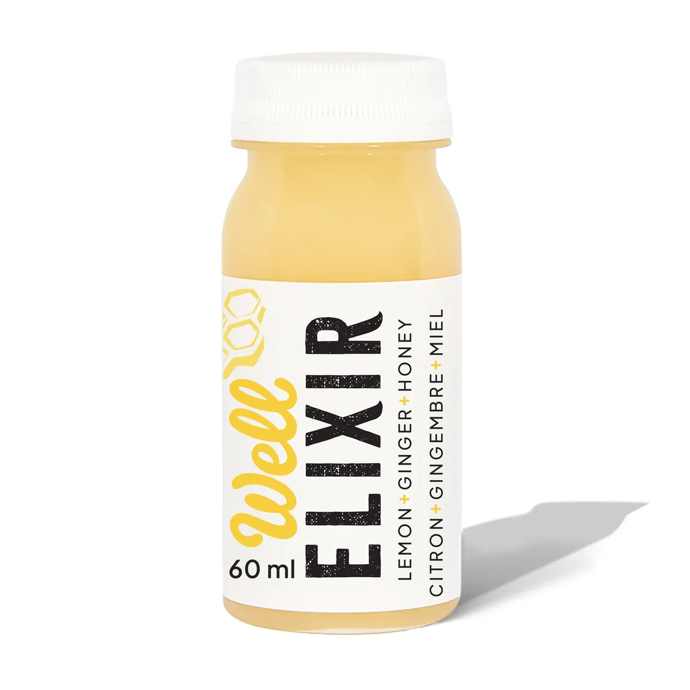

Élixirs naturels · 3 min de lecture
Élixir Anti-Rhume : un soutien naturel pour booster l’immunité et apaiser les premiers

symptômes
Lorsque les températures baissent ou que les saisons changent, notre organisme est souvent mis à rude épreuve. Nez qui pique, gorge sensible, petite toux persistante… Ces signaux sont souvent les premiers signes d’un rhume.
Dans cet article, je te présente un élixir naturel simple, rapide et extrêmement efficace pour combattre les premiers symptômes du rhume.
Grâce à l’association du citron, du miel, de l’eau tiède et du gingembre frais râpé, tu obtiens une boisson puissante qui :
renforce l’immunité,
calme la toux,
apaise instantanément la gorge irritée.
👉 Un véritable indispensable en période froide, lors des changements de saison ou dès les premiers picotements.
🍋 Recette de l’Élixir Anti-Rhume
Ingrédients
Le jus d’1 citron
200 ml d’eau
1 cuillère à soupe de miel
1 cuillère à café de gingembre frais râpé
Préparation
Mélange tous les ingrédients dans une tasse.
Bois de préférence tiède pour une efficacité optimale.
💪 Bienfaits essentiels de l’Élixir Anti-Rhume
Renforce l’immunité
Le citron et le gingembre sont riches en vitamine C et en antioxydants, idéals pour stimuler naturellement les défenses immunitaires.Calme la toux
Le miel tapisse la gorge, réduit les irritations et apporte une douceur immédiate.Apaise les maux de gorge
L’eau tiède associée au miel soulage rapidement les picotements et l’inflammation.Action chauffante et protectrice
Le gingembre réchauffe l’organisme et aide à lutter contre les premiers virus saisonniers.
🔬 Pourquoi cet élixir est-il si efficace ?
Chaque ingrédient joue un rôle clé :
Le citron détoxifie et booste l’immunité grâce à sa richesse en vitamine C.
Le miel apaise, protège et adoucit les muqueuses.
Le gingembre stimule la circulation, réchauffe le corps et soutient les défenses naturelles.
L’eau tiède facilite l’assimilation et renforce l’action des actifs.
👉 Ensemble, ils forment une défense naturelle rapide, accessible et efficace contre les inconforts du rhume.
☕ Astuce d’utilisation
Bois cet élixir 2 à 3 fois par jour, dès l’apparition des premiers symptômes.
Consommé tiède, il apaise davantage la gorge et active mieux les bienfaits des ingrédients.
👥 À qui s’adresse cet élixir ?
À ceux qui sentent un rhume s’installer
À ceux qui recherchent une solution naturelle, immédiate et efficace
À ceux qui veulent renforcer leurs défenses immunitaires en hiver
À tous ceux qui privilégient des rituels simples et 100 % naturels
⚠️ Important
Le miel est déconseillé aux enfants de moins d’un an.
En cas de fièvre persistante ou de symptômes prolongés, consulte un professionnel de santé.
✍️ À propos de l’auteur
Je suis également auteur de livres bien-être sous le pseudo Chest0 JM.S.
Je crée et partage des guides pratiques, des élixirs naturels et des programmes santé accessibles à tous, pour améliorer la vitalité physique, mentale et alimentaire.
📚 Mes ouvrages sont disponibles sur Amazon pour celles et ceux qui souhaitent aller plus loin dans leur transformation bien-être.
🔗 Retrouve tout mon univers bien-être ici :
👉 https://linktr.ee/Chest00
✨ Prends soin de toi naturellement, ton corps sait se défendre… à condition de lui donner les bons outils et je tiens à te rappeler cette règle d'or que jaime beaucoup et guide mes choix au quotidien "si la nature ne la pas créé, ne le consomme pas"
👉 Si tu veux aller plus loin, découvre aussi notre : Les Probiotiques Naturels en Complements Alimentaires : Une Clé pour la Santé
Plus de 40 recettes d'élixirs dans les livres Chest0.
Voir les livres